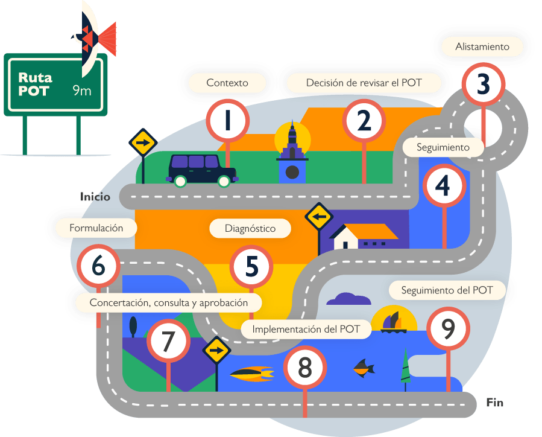

Una guía para tomar la dirección adecuada. A continuación, se describen cada uno de los pasos de la ruta. Contiene, descripciones, definiciones, recursos y ayudas sobre los procesos técnicos y administrativos que debe hacer una administración municipal en el marco del ordenamiento territorial. También se relacionan los servicios que ofrece la Federación Colombiana de municipios para apoyar los procesos de revisión y ajuste.

*Tenga en cuenta que los pasos marcados con un asterisco son etapas normativas del POT.


Estamos en la Ruta del POT: Una guía para tomar la dirección adecuada. Este es espacio para que los municipios tengan un apoyo para realizar los procesos de revisión, ajuste o elaboración de su Plan de Ordenamiento Territorial – POT. Es el resultado de un proceso minucioso de que busca dar respuestas a los municipios sobre posibles obstáculos y dificultades que se encontrarán en el proceso. Siendo así, esta ruta busca dar la información y el acompañamiento necesario, en el momento oportuno, para que los municipios puedan sortear los retos que se van presentando en las diferentes etapas.
Lo primero, es identificar en qué estado de avance se encuentran y hacerse las siguientes preguntas: ¿Dónde estamos parados? ¿Qué camino hemos recorrido? Y, mirar hacia adelante para entender ¿Cuánto nos falta por recorrer y qué debemos hacer para recorrerlo de la manera más adecuada? Sigan las señales, hagan los altos en el camino, estén atentos a las alertas para llegar a la meta.
Prendan todos los motores.
